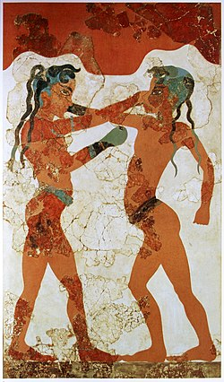

სხეულის სხვადასხვა კიდურებით დარტყმა , როგორიცაა ფეხებზე დარტყმები და მუშტები , როგორც ადამიანის აგრესიის აქტი , კაცობრიობის ისტორიის მანძილზე არსებობდა მთელ მსოფლიოში და საბრძოლო სისტემას ისეთივე უძველესი წარმოადგენდა, როგორც ჭიდაობა . თუმცა, სპორტული შეჯიბრებების თვალსაზრისით , პრეისტორიულ ხანაში დამწერლობის ნაკლებობისა და ცნობების ნაკლებობის გამო, შეუძლებელია პრეისტორიულ ხანაში კრივის ნებისმიერი სახის წესების დადგენა და უძველეს დროში ამის შესახებ დასკვნების გამოტანა მხოლოდ სპორტის შესახებ არსებული რამდენიმე ხელუხლებელი წყაროდან და ცნობიდან შეიძლება. კრივის სპორტის წარმოშობა უცნობია, [ 4 ] თუმცა, ზოგიერთი წყაროს თანახმად, კრივს, მისი ნებისმიერი ფორმით, პრეისტორიული წარმოშობა აქვს დღევანდელი ეთიოპიიდან , სადაც ის ძვ. წ. VI ათასწლეულში გამოჩნდა. როდესაც ეგვიპტელები ნუბიაში შეიჭრნენ , მათ კრივის ხელოვნება ადგილობრივი მოსახლეობისგან ისწავლეს და ეს სპორტი ეგვიპტეში გადაიტანეს, სადაც ის პოპულარული გახდა. ეგვიპტიდან კრივი სხვა ქვეყნებშიც გავრცელდა, მათ შორის საბერძნეთში , აღმოსავლეთით მესოპოტამიამდე და ჩრდილოეთით რომში. [ 5 ] ნებისმიერი სახის კრივის უძველესი ვიზუალური მტკიცებულება ეგვიპტესა და შუმერში გვხვდება , ორივე ძვ.წ. მესამე ათასწლეულით. [ 6 ] [ 7 ] ეგვიპტური თებეს რელიეფური ქანდაკება ( დაახლ. ძვ.წ. 1350 წელი ) გამოსახავს როგორც მოკრივეებს, ასევე მაყურებლებს. [ 7 ] ეს ადრეული ახლო აღმოსავლური და ეგვიპტური გამოსახულებები ასახავდა შეჯიბრებებს, სადაც მებრძოლები ან შიშველი მუშტებით იყვნენ დაკავებულნი, ან მაჯაზე სამაგრი ჰქონდათ. [ 7 ] ხელთათმანების გამოყენების უძველესი მტკიცებულება მინოსურ კრეტაზე გვხვდება ( დაახლ. ძვ.წ. 1500-1400 წწ.). [ 7 ] ძველ ინდოეთში კრივის სხვადასხვა სახეობა არსებობდა . მუსტი-იუდჰას შესახებ ყველაზე ადრეული ცნობები კლასიკური ვედური ეპოსებიდან მოდის , როგორიცაა რიგვედა ( დაახლ. ძვ. წ. 1500–1000 წწ.) და რამაიანა ( დაახლ. ძვ. წ. 700–400 წწ.). [ 12 ] მაჰაბჰარატა აღწერს ორ მებრძოლს, რომლებიც შეკრული მუშტებით იბრძვიან და ებრძვიან ფეხებს, თითებით, მუხლით დარტყმებით და თავის დარტყმებით მეფე ვირატას დროს . [ 13 ] დუელები ( ნიუდჰამი ) ხშირად სიკვდილამდე იბრძოდა. დასავლელი სატრაპების პერიოდში , მმართველი რუდრადამანი - გარდა იმისა, რომ კარგად ერკვეოდა „დიდ მეცნიერებებში“, მათ შორის ინდურ კლასიკურ მუსიკაში , სანსკრიტულ გრამატიკასა და ლოგიკაში - ნათქვამია, რომ ის შესანიშნავი მხედარი, ეტლის მეთვალყურე, სპილოების მხედარი, ხმლის მჭრელი და მოკრივე იყო. [ 14 ] მე-18 საუკუნის სიქჰური ტექსტი „ გურბილას შემი“ მუსტი-იუდჰას შესახებ მრავალრიცხოვან ცნობებს გვაწვდის . საბრძოლო ხელოვნება დაკავშირებულია ინდური კულტურის სხვა ნაწილებში არსებულ საბრძოლო ხელოვნების სხვა ფორმებთან, მათ შორის მუაი ტაი ტაილანდში, მუაი ლაო ლაოსში, პრადალ სერეი კამბოჯაში და ლეტვეი მიანმარში. [ 15 ] [ 16 ] ძველ საბერძნეთში კრივი კარგად განვითარებული სპორტი იყო , რომელსაც პიგმაქია ერქვა და მუდმივი პოპულარობით სარგებლობდა. ოლიმპიური ტერმინოლოგიით, ის პირველად ძვ. წ. 688 წელს, 23-ე ოლიმპიადაზე დაინერგა . მოკრივეები ტყავის თასმებს ხელებზე იხვევდნენ დასაცავად. რაუნდები არ ტარდებოდა და მოკრივეები იბრძოდნენ მანამ, სანამ ერთ-ერთი მათგანი დამარცხებას არ აღიარებდა ან ვეღარ გააგრძელებდა. წონით კატეგორიებში არ გამოიყენებოდა, რაც იმას ნიშნავდა, რომ უფრო მძიმეწონიან მებრძოლებს დომინირებისკენ მიდრეკილება ჰქონდათ. კრივის ეს სტილი, როგორც წესი, ხასიათდებოდა მარცხენა ფეხის წინ წამოწეული პოზიციით, მარცხენა ხელი ნახევრად გაშლილი იყო როგორც დამცავი, გარდა იმისა, რომ დარტყმისთვის გამოიყენებოდა, ხოლო მარჯვენა ხელი უკან იყო გადაწეული დარტყმისთვის მზად. ძირითადად მოწინააღმდეგის თავი იყო სამიზნე და არ არსებობს მტკიცებულება, რომ სხეულზე დამიზნება ან დარტყმების გამოყენება გავრცელებული იყო, [ 17 ] [ 18 ] რომელშიც ის თანამედროვე დასავლურ კრივს ჰგავდა.ძველ რომში კრივი პოპულარული სანახაობრივი სპორტი იყო . [ 19 ] მებრძოლები თითებს მუშტებზე შემოხვეული ტყავის ზოლებით იცავდნენ. საბოლოოდ, უფრო მაგარი ტყავი გამოიყენეს და ეს ზოლები იარაღად იქცა. ზოლებს ლითონის სამაგრები დაამატეს ცესტუსის დასამზადებლად . საბრძოლო ღონისძიებები რომაულ ამფითეატრებში იმართებოდა .
